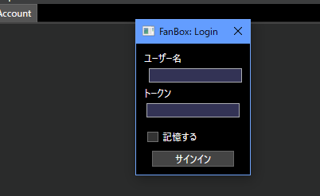

FanBoxとは
さしみ。のコンテンツを簡単に閲覧できるソフトです。
特にゲームのベータ版などはアップデートのしやすさからこのソフトの使用がおすすめされます。
また、ブログなどは記述の自由度を考慮してこちら側からみられるようにしています。
有料コンテンツについて
さしみ。のpixivFANBOXを支援してくださっている方は、FanBoxからも特典を得られます。
※ログインはGameJoltのアカウントで行います。

トークンはパスワードではありません。トークンはGameJoltの画面右上のアイコンから"Game Token"を選択することで確認できます。
pixivFANBOXの「支援者様へのお願い」に、GameJoltのユーザー名を送ってください。